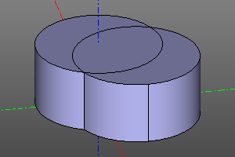
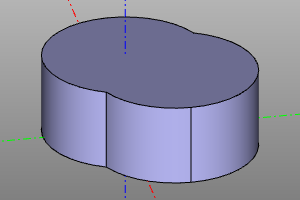

Geometry validation and repair
Validation: validate and assert_valid
validate() returns an error report; is_valid() returns a boolean. assert_valid() raises ShapeValidationError for an invalid shape. These methods do not repair anything.
import zencad as z
body = z.box(10)
report = body.validate()
assert report.valid
print(report.to_dict())
body.assert_valid()
Validity does not imply a closed solid. Use zencad check model.py --valid --solid to check the final solid. Report format.
unify
Removes redundant edges and merges faces on the same surface. Works with 2D and 3D shapes. The body.clean() method also provides this simplification.
from zencad import *
body = cylinder(r=10, h=10) + cylinder(r=10, h=10).move(5, 5)
simplified = unify(body)
simplified.assert_valid()
display(simplified)
show()
| Before | After |
|---|---|
 |
 |
heal — repairing geometry defects
Repairs defects using OpenCascade, creating a new shape. Validate the result: repair is not always possible.
The example (box-reversed-face.brep) is a 10 × 10 × 10 cube with an incorrectly oriented face.
from pathlib import Path
import zencad as z
body = z.from_brep(Path(__file__).with_name("box-reversed-face.brep"))
before = body.validate()
print(before.valid) # False
print([issue.code for issue in before.issues])
# ['bad_orientation_of_subshape']
fixed = body.heal(tolerance=1e-7, max_tolerance=1e-3)
fixed.assert_valid()
print(fixed.is_valid()) # True
print(round(float(fixed.mass()), 6)) # 1000.0
assert not body.is_valid()
z.display(fixed)
z.show()
heal corrects the face orientation; the original shape stays unchanged. tolerance sets the working precision and max_tolerance the upper tolerance limit, in model units.